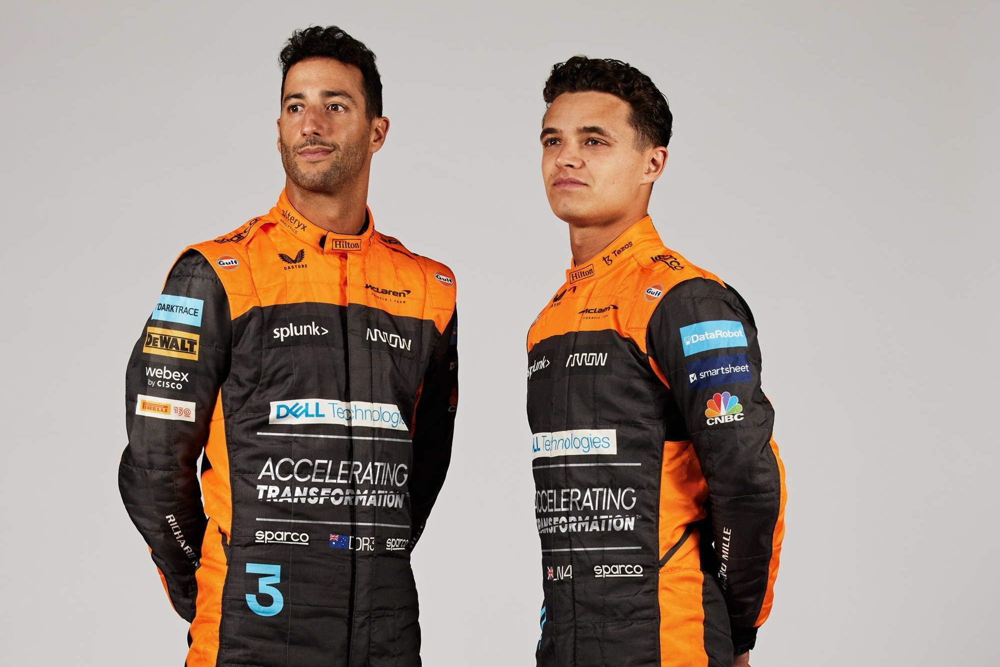
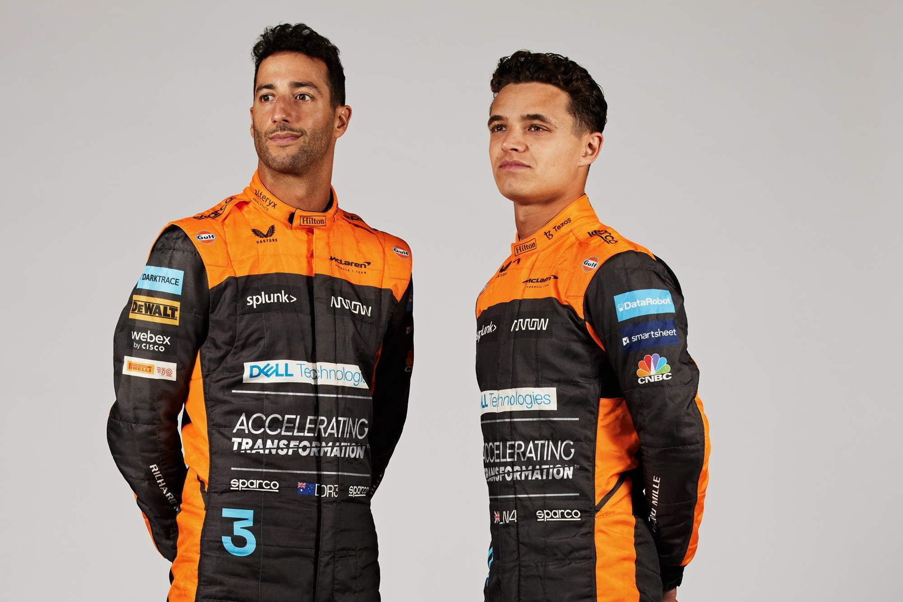

|
McLaren Racing Limited is a British motor racing team based at the
McLaren Technology Centre in Woking, Surrey, England. McLaren is
best known as a Formula One constructor, the second oldest active
team, and the second most successful Formula One team after Ferrari,
having won 183 races, 12 Drivers' Championships and 8 Constructors'
Championships. McLaren also has a history of competing in American
open wheel racing, as both an entrant and a chassis constructor, and
has won the Canadian-American Challenge Cup (Can-Am) sports car
racing championship. The team is a subsidiary of the McLaren Group,
which owns a majority of the team. Founded in 1963 by New Zealander
Bruce McLaren, the team won its first Grand Prix at the 1968 Belgian
Grand Prix, but their greatest initial success was in Can-Am, which
they dominated from 1967 to 1971. Further American triumph followed,
with Indianapolis 500 wins in McLaren cars for Mark Donohue in 1972
and Johnny Rutherford in 1974 and 1976. After Bruce McLaren died in
a testing accident in 1970, Teddy Mayer took over and led the team
to their first Formula One Constructors' Championship in 1974, with
Emerson Fittipaldi and James Hunt winning the Drivers' Championship
in 1974 and 1976 respectively. 1974 also marked the start of a
long-standing sponsorship by the Marlboro cigarette brand. In 1981,
McLaren merged with Ron Dennis' Project Four Racing; Dennis took
over as team principal, and shortly afterwards organised a buyout of
the original McLaren shareholders to take full control of the team.
This began the team's most successful era; with Porsche and Honda
engines, Niki Lauda, Alain Prost, and Ayrton Senna won seven
Drivers' Championships between them and the team took six
Constructors' Championships. The combination of Prost and Senna was
particularly dominant—together they won all but one race in 1988—but
later their rivalry soured and Prost left for Ferrari. Fellow
English team Williams offered the most consistent challenge during
this period, the two winning every constructors' title between 1984
and 1994. By the mid-1990s, Honda had withdrawn from Formula One,
Senna had moved to Williams, and the team went three seasons without
a win. With Mercedes-Benz engines, West sponsorship, and former
Williams designer Adrian Newey, further championships came in 1998
and 1999 with driver Mika Häkkinen, and during the 2000s the team
were consistent front-runners, with driver Lewis Hamilton taking
their latest title in 2008. Ron Dennis retired as McLaren team
principal in 2009, handing over to long-time McLaren employee Martin
Whitmarsh. At the end of 2013, after the team's worst season since
2004, Whitmarsh was ousted. McLaren announced in 2013 that they
would be using Honda engines from 2015 onwards, replacing
Mercedes-Benz.[6] The team raced as McLaren Honda for the first time
since 1992 at the 2015 Australian Grand Prix. In September 2017,
McLaren announced they had agreed on an engine supply with Renault
from 2018 to 2020. McLaren is using Mercedes-Benz engines from the
2021 season until at least 2024.[7] After initially returning to the
Indianapolis 500 in 2017 as a backer of Andretti Autosport to run
Fernando Alonso and then in 2019 as an independent entry, McLaren
announced in August 2019 that they would run in conjunction with
Arrow Schmidt Peterson Motorsports starting in 2020 to run the full
IndyCar Series, the combined entry being named Arrow McLaren SP.[8]
Initially having no ownership interest in the team, McLaren would
purchase 75% of the operation in 2021.[9] McLaren entered the
electric off-road racing series Extreme E in 2022.[10]
|
 
